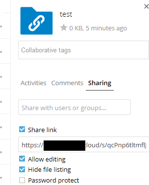

Facendo envíos anónimos
Pode crear os seus propios directorios de envío especiais para que outras persoas poidan enviarlle ficheiros sen ter que iniciar sesión no servidor e sen ser un usuario do Nextcloud. Non se lles permitirá ver o contido deste directorio nin facer cambios. Esta é unha excelente alternativa para enviar grandes anexos por correo electrónico, usar un servidor FTP ou empregar servizos comerciais para compartir ficheiros.
Axustando o seu propio repositorio de ficheiros
Vaia a Ficheiros e cree ou escolla un cartafol, o envío anónimo debe facerse a:

Marcar Compartir ligazón, Permitir a edición, Agochar a lista de ficheiros:

Agora pode enviar a ligazón ao cartafol de carga manualmente ou usando a función de envío do Nextcloud, se o seu administrador a activou.
Envío de ficheiros
Empregar a función de envío anónimo é sinxelo. Recibe unha ligazón ao cartafol de envío, prema na ligazón e logo verá unha páxina do Nextcloud cun botón «Prema para enviar»:

Isto abre un selector de ficheiros para que seleccione o ficheiro ou directorio que quere enviar. Tamén pode soltar os ficheiros na xanela.
Cando remate o envío, os nomes de ficheiro aparecen enumerados: